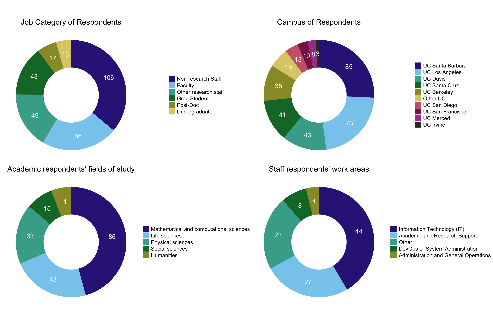

project_root <- here::here() # requires that you be somewhere in the
# project directory (not above it)
# packages
suppressMessages(source(file.path(project_root, "scripts/packages.R")))
# functions and objects used across scripts
suppressMessages(source(file.path(project_root, "scripts/utils.R")))Donut plots
Overview
This script creates donut plots that show survey participation rates across various groups. If the script is run without arguments, it will create donut charts for all participants. If run with the command-line flag “-c”, it will create donut charts for OS contributors only.
Import packages and utilities
Define functions
create_df_for_plotting
- Arguments:
data: The unmodified data frame with all the (deidentified) survey data.column: The name of the column with the data to be plotted.
- Details:
- This function creates a new data frame suitable for plotting as a donut plot. It essentially creates a single stacked bar with all our data, and then plots that on a polar coordinate system to make it a donut. Method from https://r-graph-gallery.com/128-ring-or-donut-plot.html. This function extracts the data of interest from the larger data frame, and puts them into a new data frame along with relevant breakpoints for and label locations.
- Outputs:
long_data: a new data frame with columns values, Freq, fraction, ymax, ymin, labelPosition, and label.
create_df_for_plotting <- function(data, column) {
if (!column %in% names(data)) {
stop("Column not found in data frame")
}
# Extract specified column and remove rows where this column is an empty string
# i.e. the participant didn't answer
values <- data[[column]][nzchar(data[[column]])]
# Count occurrences of each unique value
values_table <- table(values)
# Convert to data frame and compute fractions
long_data <- as.data.frame(values_table) %>%
mutate(fraction = Freq / sum(Freq)) %>%
arrange(desc(fraction))
# Compute the cumulative percentages (top of each rectangle)
long_data$ymax <- cumsum(long_data$fraction)
long_data$ymin <- c(0, head(long_data$ymax, n = -1))
# Compute label position
long_data$labelPosition <- (long_data$ymax + long_data$ymin) / 2
# Create label column
long_data$label <- paste0(long_data$Freq)
return(long_data)
}donut_chart
- Arguments:
df: The data frame ready for plotting, such as the one produced by create_df_for_plotting.
- Details:
- This function creates a donut plot.
- Outputs:
- A ggplot object.
donut_chart <- function(df) {
ggplot(df, aes(ymax = ymax, ymin = ymin, xmax = 4, xmin = 3, fill = values)) +
geom_rect() +
# Add labels
geom_text(
x = 3.5,
aes(y = labelPosition, label = label),
size = 6,
color = "white"
) +
scale_fill_manual(values = colors) +
theme_void() +
coord_polar(theta = "y") +
xlim(c(2, 4)) +
theme(
legend.text = element_text(size = 14),
legend.title = element_blank(),
plot.title = element_text(hjust = 0.5, size = 20),
plot.background = element_rect(fill = "white", color = "white")
)
}Load data
data <- load_qualtrics_data("deidentified_no_qual.tsv")Process command-line arguments
Here, I use a boolean variable called contributor_mode to record whether the user wants to create donut plots for all respondents or contributors only. It’s FALSE by default, so if you want to run this script interactively in a notebook, you can safely run this cell without any adjustments.
args <- commandArgs(trailingOnly = TRUE) # only the user-supplied part
contributor_mode <- FALSE # default
if (length(args) > 0) {
# treat the *first* argument as the flag
flag <- tolower(args[1])
if (flag %in% c("--contributors", "-c", "contributors")) {
contributor_mode <- TRUE
} else {
stop(
"Unknown argument: ", flag,
"\nUsage: Rscript myscript.R [--contributors | -c | contributors]"
)
}
}
if (contributor_mode) {
# Filter the data to include only OS contributors
data <- data %>%
filter(
contributor_status_1 == "True"
)
}
population <- ""
# For plot axis labels
if (contributor_mode) {
population <- "Contributors"
} else {
population <- "Respondents"
}Donut charts of participation by groups
This script creates 4 plots, called p1-p4.
Plot #1 is of job category (Undergrad, Post-Doc, Non-research Staff, etc.).
job_data <- create_df_for_plotting(data, "job_category")
# Clean up this one long job name:
# "Other research staff (e.g., research scientist, research software engineer)"
job_data$values <- gsub(
"^Other.*",
"Other research staff",
job_data$values
)
# from scripts/utils.R
job_data <- reorder_factor_by_column(job_data, values, Freq, descending = TRUE)
p1 <- donut_chart(job_data) +
labs(title = sprintf("Job Category of %s", population))Here’s a look at the job_data data frame that will be used for plotting the donut chart.
job_data values Freq fraction ymax ymin labelPosition label
1 Non-research Staff 106 0.36054422 0.3605442 0.0000000 0.1802721 106
2 Faculty 66 0.22448980 0.5850340 0.3605442 0.4727891 66
3 Other research staff 49 0.16666667 0.7517007 0.5850340 0.6683673 49
4 Grad Student 43 0.14625850 0.8979592 0.7517007 0.8248299 43
5 Post-Doc 17 0.05782313 0.9557823 0.8979592 0.9268707 17
6 Undergraduate 13 0.04421769 1.0000000 0.9557823 0.9778912 13Plot #2 is of campus.
campus_data <- create_df_for_plotting(data, "campus")
campus_data <- reorder_factor_by_column(campus_data, values, Freq, descending = TRUE)
campus_data <- campus_data %>% filter(values != "I'm not affiliated with UC")
p2 <- donut_chart(campus_data) +
labs(title = sprintf("Campus of %s", population))Plot #3 is of their field of study. Qualitative answers are not included in this plot.
field_data <- create_df_for_plotting(data, "field_of_study")
field_data <- reorder_factor_by_column(field_data, values, Freq, descending = TRUE)
p3 <- donut_chart(field_data) +
labs(title = sprintf("Academic %s' fields of study", tolower(population)))Plot #4 is of staff categories (IT, Research Support, etc.). This one is more complicated. I’m not using my create_df_for_plotting function for this group because I want to combine the jobs that have only 1 or 2 responses into the existing “Other” category. So the code is similar but not the same.
staff_data <- data[["staff_categories"]][nzchar(data[["staff_categories"]])]
# Count occurrences of each unique value
staff_data <- as.data.frame(table(staff_data))
names(staff_data) <- c("job", "count")
staff_data$job <- as.character(staff_data$job)
codenames <- c(
"Academic and Research Support" = "Academic and Research Support",
"Other" = "Other",
"Finance" = "Finance"
)
# a two-column dataframe: "job" and "count"
staff_data <- shorten_long_responses(staff_data, codenames)
staff_data_clean <- as.data.frame(staff_data) %>%
mutate(job = if_else(count < 3, "Other", job)) %>% # relabel rare jobs as "Other"
group_by(job) %>% # gather all “Other” rows together
summarise(Freq = sum(count), .groups = "drop")
staff_data_clean <- reorder_factor_by_column(staff_data_clean, job, Freq, descending = TRUE)
staff_long_data <- as.data.frame(staff_data_clean) %>%
mutate(fraction = Freq / sum(Freq)) %>%
arrange(desc(fraction))
# Compute the cumulative percentages (top of each rectangle)
staff_long_data$ymax <- cumsum(staff_long_data$fraction)
staff_long_data$ymin <- c(0, head(staff_long_data$ymax, n = -1))
# Compute label position
staff_long_data$labelPosition <- (staff_long_data$ymax + staff_long_data$ymin) / 2
# Create label column
staff_long_data$label <- paste0(staff_long_data$Freq)
# Rename this one column to match the donut_chart function
names(staff_long_data)[names(staff_long_data) == "job"] <- "values"
p4 <- donut_chart(staff_long_data) +
labs(title = sprintf("Staff %s' work areas", tolower(population)))Look at the plot
combined_donuts <- patchwork::wrap_plots(p1, p2, p3, p4, ncol = 2)combined_donuts
Save the plot
# Function from utils.R, uses a path in .Renviron
save_plot(sprintf("combined_donuts_%s.tiff", tolower(population)), 18, 12)Session Info
sessionInfo()R version 4.4.2 (2024-10-31)
Platform: aarch64-apple-darwin20
Running under: macOS Sequoia 15.4.1
Matrix products: default
BLAS: /Library/Frameworks/R.framework/Versions/4.4-arm64/Resources/lib/libRblas.0.dylib
LAPACK: /Library/Frameworks/R.framework/Versions/4.4-arm64/Resources/lib/libRlapack.dylib; LAPACK version 3.12.0
locale:
[1] en_US.UTF-8/en_US.UTF-8/en_US.UTF-8/C/en_US.UTF-8/en_US.UTF-8
time zone: America/Los_Angeles
tzcode source: internal
attached base packages:
[1] tools stats graphics grDevices datasets utils methods
[8] base
other attached packages:
[1] tidyr_1.3.1 stringr_1.5.1 scales_1.4.0
[4] readr_2.1.5 pwr_1.3-0 patchwork_1.3.0
[7] mvabund_4.2.1 lintr_3.2.0 languageserver_0.3.16
[10] here_1.0.1 gtools_3.9.5 ggplot2_3.5.2
[13] forcats_1.0.0 dplyr_1.1.4 corrplot_0.95
loaded via a namespace (and not attached):
[1] generics_0.1.4 renv_1.1.4 xml2_1.3.8 stringi_1.8.7
[5] hms_1.1.3 digest_0.6.37 magrittr_2.0.3 evaluate_1.0.3
[9] grid_4.4.2 RColorBrewer_1.1-3 fastmap_1.2.0 rprojroot_2.0.4
[13] jsonlite_2.0.0 processx_3.8.6 backports_1.5.0 ps_1.9.1
[17] purrr_1.0.4 lazyeval_0.2.2 cli_3.6.5 rlang_1.1.6
[21] withr_3.0.2 yaml_2.3.10 parallel_4.4.2 tzdb_0.5.0
[25] vctrs_0.6.5 R6_2.6.1 lifecycle_1.0.4 tweedie_2.3.5
[29] MASS_7.3-61 pkgconfig_2.0.3 callr_3.7.6 rex_1.2.1
[33] pillar_1.10.2 gtable_0.3.6 glue_1.8.0 Rcpp_1.0.14
[37] statmod_1.5.0 xfun_0.52 tibble_3.2.1 tidyselect_1.2.1
[41] knitr_1.50 farver_2.1.2 htmltools_0.5.8.1 labeling_0.4.3
[45] rmarkdown_2.29 compiler_4.4.2